和yolov5类似，但是在数据集不平衡的情况下进行缺陷检测。
下载和环境安装
去GitHub上下载Anomalib的代码，解压到任意文件夹里，文件名默认是anomalib-main，虚拟环境可以单独在别的地方也可以在该文件夹下
对于虚拟环境的安装，这里不使用anaconda，尽管很多人推荐
因为没有conda来创建不同版本的python环境，所以这里的python要求3.10或者以下版本，这一点很重要，过高的版本会有依赖不支持导致安装失败。
在终端cd到你想要创建虚拟环境的目录下，执行
python -m venv anomalibenv
其中anomalibenv是虚拟环境名称，可自定义
创建完成后，执行虚拟环境目录下的 /Scripts/activate 以激活虚拟环境
最后cd到下载的anomalib-main文件夹下，执行
pip install -e .
以安装依赖，最后有个点也不要漏打
然后还要额外安装两个包，分别执行
1 | pip install openvino |
另外，默认下载的依赖中torch是不带cuda的，如果需要使用GPU资源，需要自行去pytorch官网下载合适的版本。
pip问题
pip下载使用默认源速度很慢的话可以参考下面的方法：
这里建议使用方法4:win永久换源
内置数据集
执行
python tools/train.py
以运行自带数据集，但这里并不推荐，因此这一步直接不做
不像yolo的coco128数据集，这里自带的数据集需要下载高达5G+的数据，所以直接进入下一步，自制数据集，其实也就是使用方法
制作自定义数据集
下面的图片直接借用实验室师兄的图 绝不是因为懒自己不截
进入anomalib-main\datasets下创建用于放置自制数据集的文件夹，这里以LeatherSet为例。
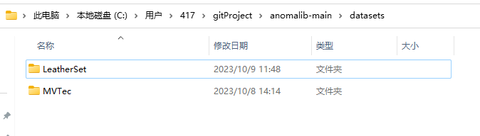
然后在LeatherSet文件夹内创建三个子文件，abnormal（用于放置负样本，即异常样本）、normal（用于放置正样本，即正常样本，注意正样本必须至少10张图片，不然会报错）、patchcore（该文件夹用于放置config配置文件，其实放在哪都可以，叫什么名字也可以，只是为了方便）。下面文件夹中正负样本已经处理完毕（忽略名为123的图片）。
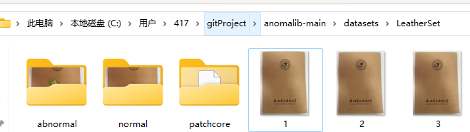
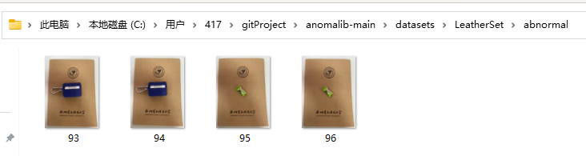
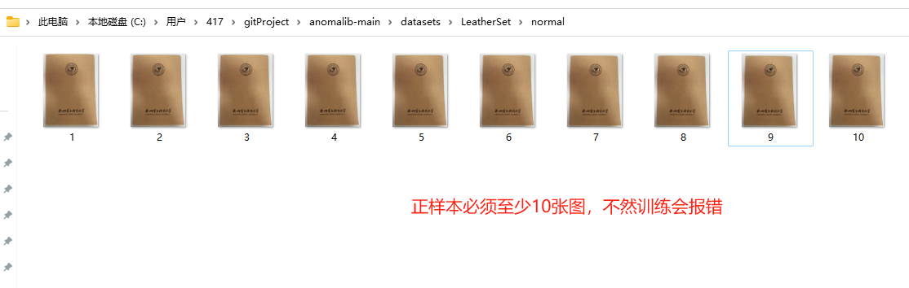
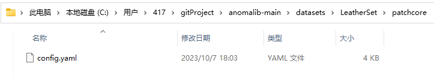
上图中的config.yaml配置文件不是凭空而来的。
基于Anomalib中已经有的配置文件，只需要在它原有的基础上修改即可。
修改过程可以不按图操作，我在配置的时候发现和自带的配置文件差别还是有点大的，这里会附在最下面
因此下面的过程作为介绍使用
去复制anomalib-main\src\anomalib\models\patchcore\config.yaml到该路径下
原config.yaml中的内容如下：
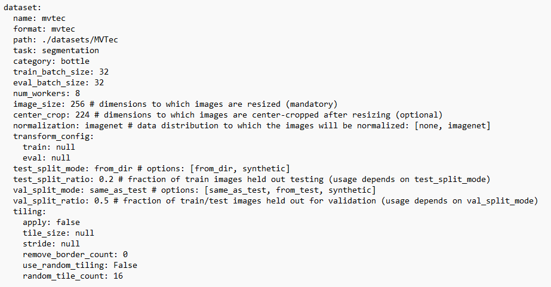
dataset部分修改如下，其中task很关键，它决定了是异常分类还是异常分割，两种模式所需要的配置也不同
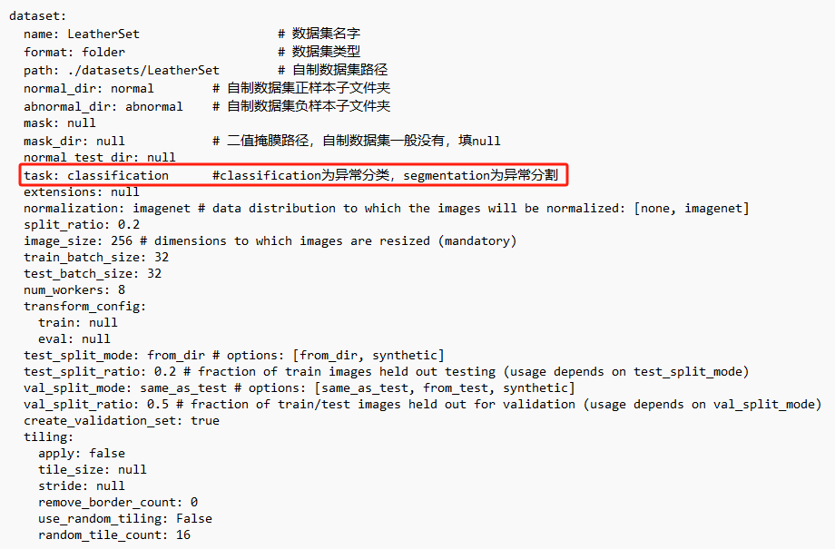
metrics部分注释掉中间的pixel
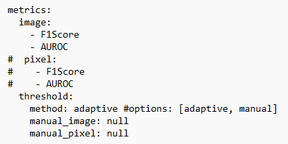
optimization部分将export_mode设置为onnx，这步就是将训练后将这些框架的模型统一转为ONNX存储
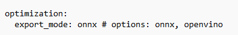
最后保存
config.yaml文件全文如下，直接粘贴可用
1 | 111 |
运行前准备
为了更好的进行调试，这里安装jupyter notebook，在这里看报错比较方便。
在虚拟环境执行
pip install jupyte
等待安装完成后再执行
jupyter notebook
（这里你需要提前在虚拟环境中cd到代码目录，jupyter notebook打开的目录就是你当前的工作目录，如果你的虚拟环境就在代码文件中就无所谓了）
就会在你的Browser中打开如下界面，然后我们新建一个NoteBook
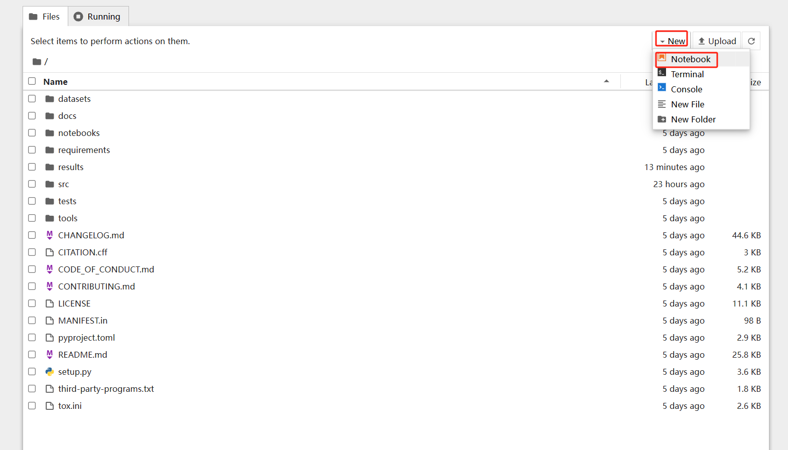
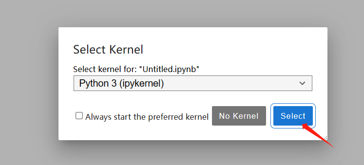
先把包导进去，输入，Shift + Enter可以执行当前代码块
1 | %load_ext autoreload |
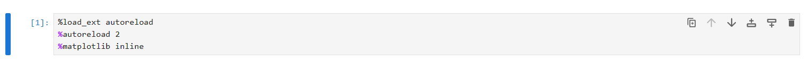
再输入
1 | import collections |
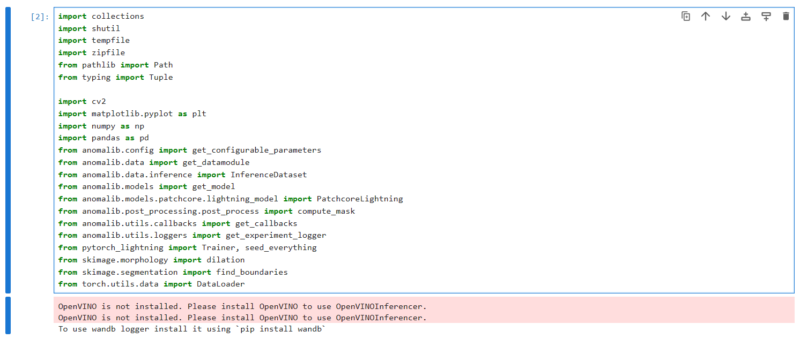
这个图中显示一些包没有安装，但是为了方便起见在这之前已经把包的安装提前到最前面去了，所以这里不用管（注意：如果要在jupyter notebook中使用pip命令需要在最前面加一个感叹号）
然后配置一下config的路径（你如果自己指定这里的值就需要修改了）
1 | PATCHCORE_CONFIG_PATH = "datasets/LeatherSet/patchcore/config.yaml" |
再进行一下基本配置，warning不必理会
1 | config = get_configurable_parameters( |
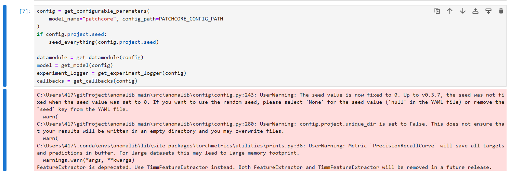
最后就可以开始训练了
1 | trainer = Trainer(**config.trainer, logger=experiment_logger, callbacks=callbacks) |

推理
训练完成后，在对应数据集的run/weight文件夹下应该有下面两个文件夹，而在oonx文件夹下又应该又下面两个文件，分别见图
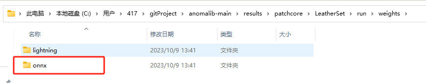
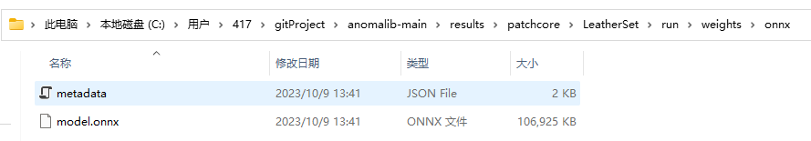
回到数据集文件夹，新建一个test文件夹，里面放入需要推理的图片
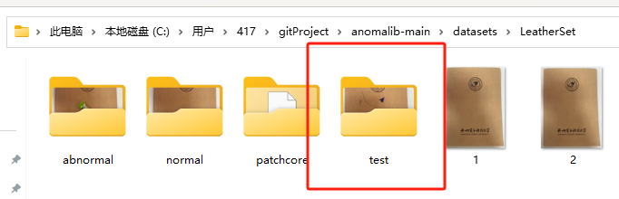
然后回到终端，Ctrl+C退出jupyter notebook模式，执行
1 | python tools/inference/openvino_inference.py --weights results/patchcore/LeatherSet/run/weights/onnx/model.onnx --metadata results/patchcore/LeatherSet/run/weights/onnx/metadata.json --input datasets/LeatherSet/test/ --output results/patchcore/LeatherSet/run/images --task classification |
以进行推理，运行完后的结果会在anomalib-main\results\patchcore\LeatherSet\run\images\test文件夹中
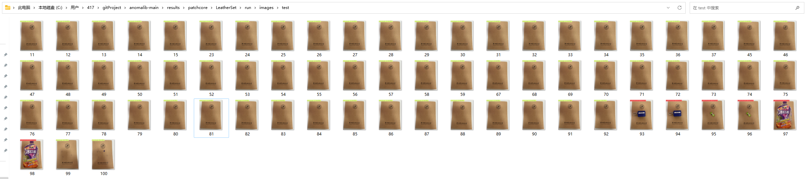
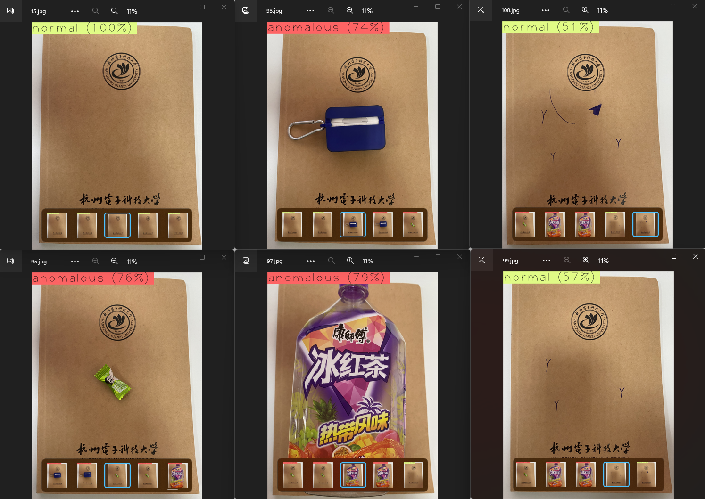
正样本数量越大效果越好，这个结果还并不是十分完美，最右边两张图是异常图，训练出来的模型也察觉到一点异常，但还是分类为正常。
也可以使用命令（和上面比只多了最后一个参数）
1 | python tools/inference/openvino_inference.py --weights results/patchcore/LeatherSet/run/weights/onnx/model.onnx --metadata results/patchcore/LeatherSet/run/weights/onnx/metadata.json --input datasets/LeatherSet/test/ --output results/patchcore/LeatherSet/run/images --task classification --visualization_mode full |
这样会显示三个图，包括原图、预测热度图以及预测结果图。
End…